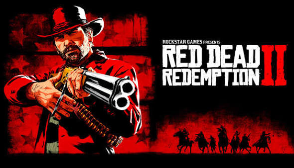
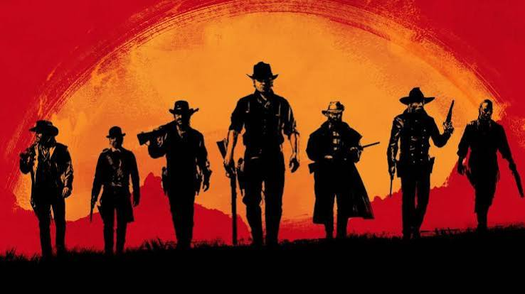
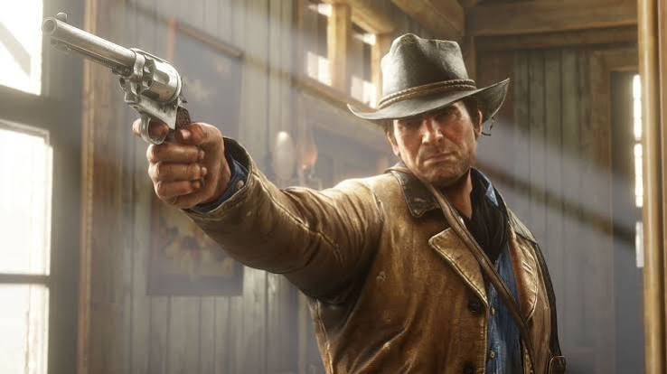

From its spiritual roots to Rockstar's sweeping cinematic masterpieces of the American frontier.
Before *Red Dead Redemption*, Rockstar San Diego developed *Red Dead Revolver* in 2004. Recognizing the massive untapped potential of an open-world western, Rockstar completely rebuilt the concept using their advanced RAGE engine. Released in 2010, the original *Red Dead Redemption* followed former outlaw John Marston as he was hunted across the dying American frontier, earning universal acclaim for its storytelling and atmosphere.

After years of meticulous development, Rockstar released *Red Dead Redemption 2* in 2018. Serving as a prequel to the first game, it focused on Arthur Morgan and the collapsing Van der Linde gang in 1899. Pushing graphical boundaries with unprecedented detail, environmental realism, and deep emotional writing, it cemented itself as one of the greatest video games ever made.

Together, the Red Dead franchise has sold tens of millions of copies worldwide. Beyond commercial success, the series is celebrated for redefining how living, breathing worlds are crafted in gaming—from dynamic NPC routines and wildlife ecosystems to unforgettable character arcs that stay with players long after the credits roll.
